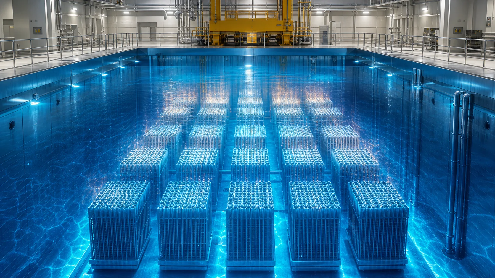
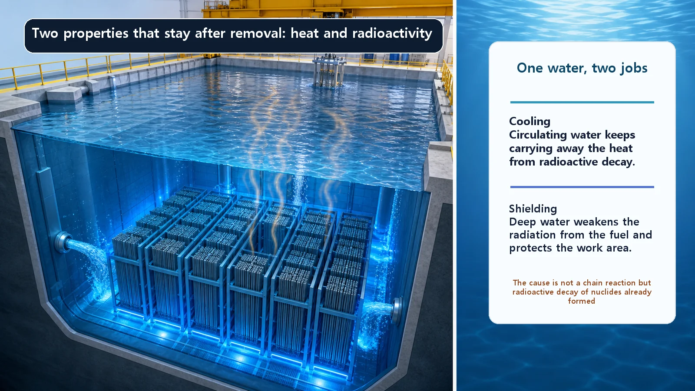
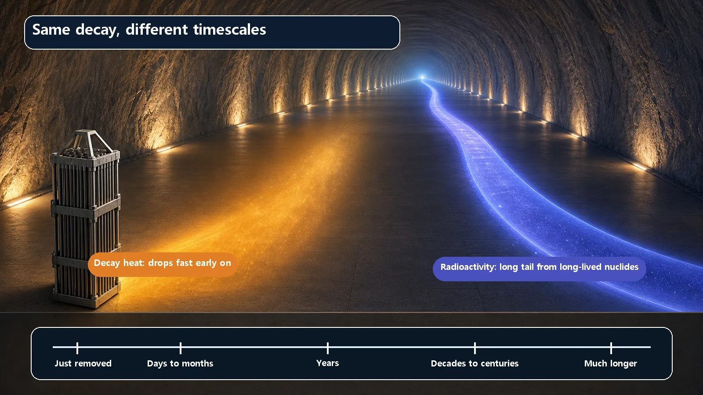

Long-Term Core Behavior & Fuel Cycle · 171
Retired but Still Warm and Busy — The Heat and Radioactivity of Spent Fuel
The chain reaction stops when fuel leaves the reactor, but decay keeps going: heat fades relatively fast, radioactivity far more slowly.

Fuel removed from a reactor no longer sustains a chain reaction, but it still gives off heat and radiation. Both come from the radioactive decay of fission products and transuranic elements formed during operation. Decay heat falls relatively quickly at first, while radioactivity, driven by long-lived nuclides, declines over a much longer time, so the two have to be handled together without judging one by the other.
"If the fuel is used up, isn't that the end of it?" That's the usual first reaction to spent nuclear fuel. But taking fuel out of a reactor is not like unplugging an iron. An unplugged iron stays hot for a while; fuel removed from a reactor keeps producing heat and giving off radiation on its own, and for far longer. Let's look at the two properties that remain after the fuel is "used up": the heat and radioactivity of spent fuel.
You don't fold up the grill the moment the fire is out
After a barbecue, nobody puts out the coals and immediately tosses the grill into the car trunk. The outside may feel cooler, but the inside is still hot, and stirring the ashes reveals glowing embers that linger for quite a while. So you set the grill somewhere safe and wait.
Notice that "being hot" and "still having embers" fade at different speeds. Surface heat goes fairly quickly; embers deep in the ash last much longer. Spent fuel is similar: after leaving the reactor it keeps two properties, heat and radioactivity, and they decline at different rates.
(The analogy stops there. Embers can flare up again with oxygen, but the heat and radioactivity of spent fuel never "grow back." Over time they only go down.)
Same on the outside, different inside
Reactor fuel is made of fingertip-sized ceramic pellets, mostly uranium dioxide, packed into long tubes. After several years of being "burned" in the reactor (having energy drawn out through fission), it can no longer be used as efficiently and is taken out of the core. Fuel that has done its job and been removed from the reactor is spent fuel, a bit like a battery swapped out after delivering its rated share.
It looks much the same as when it went in, but inside it has changed. Split uranium nuclei have left behind fission products, hundreds of nuclides such as cesium, strontium and iodine. Some uranium has also swallowed neutrons and become elements heavier than uranium, the transuranic elements such as plutonium and americium. Many of these new substances are radioactive, so even left alone they decay and release heat and radiation. That's why spent fuel stays "warm and busy."

Property one: heat
When fuel leaves the reactor, the fission chain reaction stops; the fire is out. Yet heat keeps coming, because the radioactive nuclides formed earlier keep decaying, and each decay releases a little energy. This leftover heat is called decay heat (residual heat).
The key point: it isn't hot because fission is still going on, but because substances already present are decaying on their own. So the heat never builds back up; it only decreases, and quickly at first. Right after a reactor shuts down, decay heat is a few percent of rated power; after a few hours it is around 1 percent, and after a day lower still.
"A few percent" sounds small, but a reactor's heat output is so large that it is far from negligible, so freshly removed fuel must be kept cool. Like a grill's surface heat, decay heat largely subsides over the first few days to few years.
Property two: radioactivity
Radioactivity simply means how often atomic nuclei decay per unit of time. Each decay sends out radiation (alpha, beta or gamma rays, for example), so high radioactivity means radiation is emitted more often.
Right after removal, spent fuel's radioactivity is very high, and it decreases over time, just like heat. The crucial difference: radioactivity declines over a much longer time than heat, the way buried embers outlast the surface heat.
The reason is that each nuclide has its own half-life, the time for half of it to disappear. Some are nearly gone within hours or days, but cesium and strontium, with half-lives of about 30 years, remain on a scale of centuries, and some kinds of plutonium have half-lives of tens of thousands of years. Total radioactivity is a fast-vanishing part overlapping a very slowly vanishing part: a quick early drop, then a long, gradual tail.
Related, but not the same thing
Both properties come from radioactive decay, but they measure different things. Decay heat is the amount of energy released: "how hot is it right now?" Radioactivity is the number of decays: "how often does it give off radiation?" So they fall at different speeds. Heat drops sharply early, because short-half-life nuclides produce much of the early heat; radioactivity trails a long tail because of long-lived nuclides.
Thinking "it has cooled a lot, so the radioactivity must be gone too" is a mistake. Even after the heat has dropped considerably, radioactivity can remain for a long time. The two must be handled together, but you can't judge one by the other.

So how is removed fuel handled?
The early decay heat has to be removed continuously, and the radiation has to be shielded. So right after removal, fuel usually goes into a large pool of water inside the plant, the spent fuel pool. The water does two jobs at once: it carries heat away (cooling) and acts as a thick radiation shield. That softly glowing blue water in photos of spent fuel pools is doing exactly that.
Once heat and radioactivity have fallen low enough, the fuel may be moved to storage where natural airflow alone can cool it, without water. Much of why plants keep managing fuel long after removal, maintain storage facilities and plan long management periods comes from these two properties and their different timescales.
Common points of confusion
- Heat and radioactivity are not the same. Cooling down doesn't mean radioactivity has dropped by the same amount.
- No chain reaction is still running inside spent fuel. It stops when the fuel leaves the reactor; what remains is decay of material already formed. Unlike embers, it won't flare up in the wind.
- "Spent" doesn't mean "useless waste." Spent fuel still contains significant uranium and plutonium, and whether it is seen as a resource or as waste differs by country and policy. This post takes no side.
- Radioactivity keeps decreasing, but long-lived nuclides make that take a very long time. It is accurate to say neither "it disappears quickly" nor "it stays the same forever."
Today's takeaways
- Spent fuel is fuel that has done its job and been removed from the reactor; it looks the same but now contains fission products and transuranic elements, and it carries both heat and radioactivity.
- Decay heat comes from existing radioactive material decaying, not from a continuing chain reaction, and it falls relatively quickly at first.
- Radioactivity is how often decays occur; because of long-lived nuclides it declines much more slowly than heat.
- The two come from the same decays but measure different things (rate of energy release vs. frequency of decay), so one can't be judged by the other.
- That is why removed fuel is first kept in water, which cools and shields at once, and handled under different conditions as time passes.
Heat fading relatively fast and radioactivity fading far more slowly: these two properties are the starting point for deciding how, and for how long, used fuel is stored and managed, including how long and through which stages it is cooled.